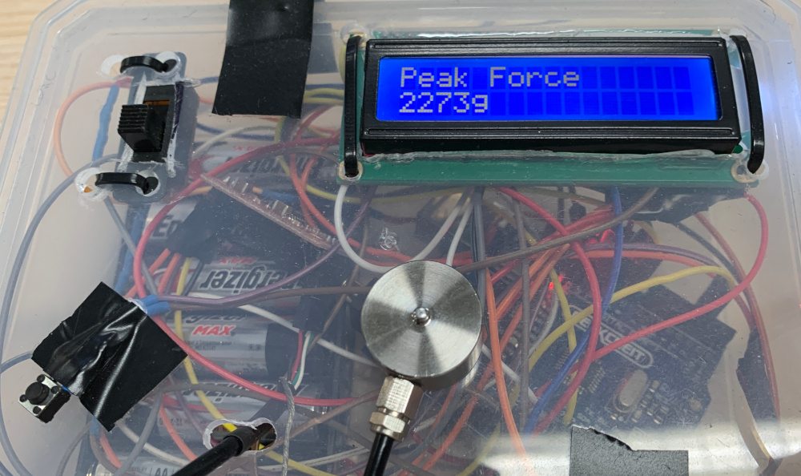

This very quick project was undertaken for Connec in order to build a suitable force gauge for a testing jig that incorporated a suitably sized load cell that would fit in with the very little space available. Parts included an arduino uno, load cell amplifier, and 16x2 LCD screen.
Standard code libraries and sketches were utilised with some minor code additions in order to create a simple variable for the displayed value that would hold the highest recorded load.
Components were very crudely packed into a simple off the shelf container as the focus of this project was purely function and to get the components working correctly as fast as possible